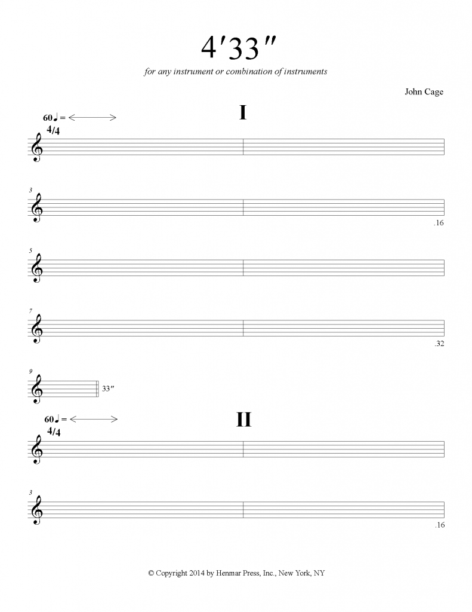

<!DOCTYPE html>
<html lang="en"></html>
<head>
  <meta charset="utf-8" />
  <link rel="stylesheet" href="week11.css" />
  <link rel="preconnect" href="https://fonts.googleapis.com">
<link rel="preconnect" href="https://fonts.gstatic.com" crossorigin>
<link href="https://fonts.googleapis.com/css2?family=Lora&display=swap" rel="stylesheet">
<link rel="preconnect" href="https://fonts.googleapis.com">
<link rel="preconnect" href="https://fonts.gstatic.com" crossorigin>
<link href="https://fonts.googleapis.com/css2?family=Josefin+Sans:wght@500&display=swap" rel="stylesheet">
</head>

<body>
    
  <div class="fade-in">
    <div class="cage">
       
            
    
   
     </div>

        <div class="goblet">
            
            
        </div>
  
 
    
    
 
   
  
  

    <div class="text">
        "Imagine that you have before you a flagon of wine. You may choose your own favorite vintage for this imaginary demonstration, so that it be a deep shimmering crimson in colour. You have two goblets before you. One is of solid gold, wrought in the most exquisite patterns. The other is of crystal-clear glass, thin as a bubble, and as transparent. Pour and drink; and according to your choice of goblet, I shall know whether or not you are a connoisseur of wine. For if you have no feelings about wine one way or the other, you will want the sensation of drinking the stuff out of a vessel that may have cost thousands of pounds; but if you are a member of that vanishing tribe, the amateurs of fine vintages, you will choose the crystal, because everything about it is calculated to reveal rather than to hide the beautiful thing which it was meant to contain."
        <br>
        <br>
        -Beatrice Warde, "The Crystal Goblet"

    </div> 

    <div class="mediumtext">
        Medium Is The <span style="color:blue">Massage</span>
    </div>
  </div>
        
      

    
  
   
  <script src="week11.js"></script>
</body>

</html>